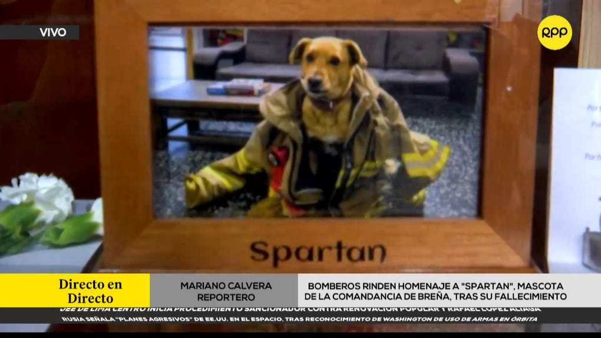

La Compañía de Bomberos Internacional 14 de Breña se encuentra de luto tras el sensible fallecimiento de 'Spartan', su querida mascota institucional que formó parte de la familia bomberil durante 12 largos años. La partida de este fiel compañero ha generado una profunda tristeza tanto entre los hombres de rojo como entre los vecinos del distrito, quienes lo consideraban un miembro más de la comunidad.
Durante más de una década, 'Spartan' no solo fue un espectador de la rutina diaria en la estación, sino un testigo y partícipe activo de la noble labor que caracteriza al Cuerpo General de Bomberos Voluntarios del Perú. Su presencia constante en el cuartel brindaba soporte emocional y alegría a los efectivos que día a día se enfrentan a situaciones de alto riesgo.
Lejos de ser únicamente una compañía de mascota tradicional, 'Spartan' demostró un compromiso inquebrantable con la vocación de servicio de la estación. A lo largo de sus 12 años de vida institucional, acompañó a los efectivos en alrededor de 25 emergencias, permaneciendo atento a la salida de las unidades y recibiendo a las dotaciones tras culminar sus labores de auxilio en las calles de Lima.
Datos clave: 'Spartan' acompañó durante 12 años a la Compañía de Bomberos Internacional 14 de Breña y participó en aproximadamente 25 emergencias reales, consolidándose como un símbolo de la estación.
El brigadier mayor Héctor Rojas, miembro de la comandancia, compartió detalles sobre los últimos momentos del fiel can y cómo la compañía se organizó para darle el último adiós que se merecía, acorde al respeto y cariño que supo ganar con los años.
El brigadier mayor Héctor Rojas contó a RPP que el último lunes los miembros de la compañía realizaron una sentida despedida para su amada mascota. Los efectivos se reunieron en las instalaciones del cuartel para acompañarlo durante sus últimos momentos y brindarle muestras de afecto y cariño antes de proceder a su traslado hacia una veterinaria, el cual se llevó a cabo alrededor de las 8:30 de la noche.
La partida de 'Spartan' deja un vacío irremplazable en las instalaciones de la Compañía de Bomberos Internacional 14 de Breña. Sin embargo, su recuerdo permanecerá vivo en la memoria de cada bombero que compartió guardia con él y en los corazones de los vecinos que lo vieron formar parte de la historia cotidiana de este tradicional distrito limeño.